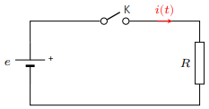
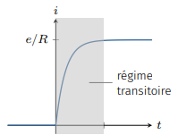
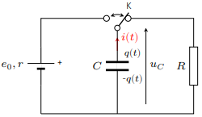
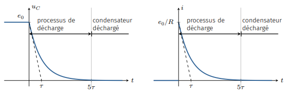
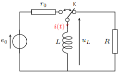
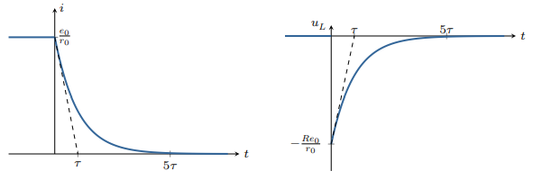
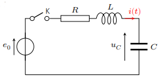
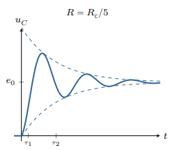
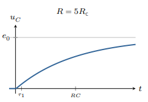
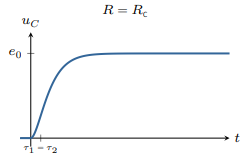

Étude des réseaux électriques en régimes transitoires
Généralités
Régime transitoire
Imaginons par exemple un circuit constitué d’une source de tension continue et d’une
résistance. Ajoutons un interrupteur. Ce dernier étant initialement ouvert, on décide de le
fermer à l’instant \(t=t_0\). Que prévoient les lois de Kirchhoff, et qu’observe-t-on en
réalité?

Montage étudié.
Lorsque l’interrupteur est ouvert, le courant ne peut pas circuler :
$$
\quad i = 0 \quad \forall t \lt t_0
$$
La fermeture de l’interrupteur autorise le courant à circuler, et les lois de Kirchhoff
imposent :
$$
\quad e - Ri = 0
$$
soit
$$
\quad i = \frac{e}{R} \quad \forall t \gt t_0
$$
Le courant passe donc brutalement de la valeur nulle à la valeur \(e/R\). Or, une
observation attentive montre que la transition entre les deux régimes continus n’est pas
instantanée, et suit une certaine évolution. Ce régime est appelé régime transitoire. La
durée caractéristique de ce régime est appelé temps de relaxation et sera noté \(\tau\).
Dans l’exemple discuté ici, l’origine du régime transitoire est lié au fait que le circuit
présente une auto-inductance que l’on a négligé dans la mise en équation. Nous verrons plus
loin que lorsque l’on tient compte de cette self-inductance, les lois de Kirchhoff rendent
bien compte de l’existence de ce régime transitoire.

Régime transitoire observé à l’ouverture de l’interrupteur.
Un régime transitoire est le régime d’évolution d’un système qui n’a pas encore atteint son
régime permanent. Il se caractérise par une durée caractéristique \(\tau\), appelée temps de
relaxation ou constante de temps.
Aspects mathématiques
Considérons un dipôle électrique passif et linéaire (par exemple constitué de conducteurs
ohmiques, condensateurs et bobines) alimenté par une source de tension ou de courant
variable.
Imaginons que l’on suive l’évolution d’une grandeur électrique (une tension, une intensité,
une charge électrique) que nous décidons de noter \(y(t)\). Dans le cadre de l’ARQS, les
lois de Kirchhoff permettent d’obtenir une équation différentielle de la
forme :
$$
\quad a_0y(t) + a_1\frac{dy(t)}{dt} + ... + a_n\frac{d^ny(t)}{dt} = f(t)
$$
où \(f(t)\) et les coefficients \(a_k\) sont connus.
Cette équation présente deux termes :
Le terme de gauche est caractéristique des éléments qui composent le dipôle. Si
\(a_n \neq 0 \), on dit que le dipôle est d’ordre \(n\).
Le terme de droite est lié à la présence du générateur. On parle de terme
d’excitation.
On établit en mathématique que la solution de l’équation différentielle est la somme
\(y(t) = y_g(t) + y_p(t)\).
\(y_p(t)\) est une solution particulière de l’équation complète qui représente le régime
forcé.
\(y_g(t)\) est la solution générale de l’équation homogène. Elle représente le régime libre,
c’est-à-dire la réponse du circuit en l’absence d’excitation.
Le régime libre se met sous la forme \(y_g(t) =A\mathrm{e}^{rt}\) où \(r\) est un nombre
réel ou complexe solution de l’équation caractéristique :
\( a_0 + a_1r + a_r^2 + ... + a_nr^n = 0 \).
Si les \(n\) racines sont distinctes, le régime libre s’écrit :
$$
\quad y_g(t) = \sum_{k=1}^{n}{A_k\mathrm{e}^{r_kt}}
$$
On détermine les 𝑛 constantes d’intégration \(A_k\) en imposant les conditions initiales à
la solution complète \(y(t)\). Celles-ci doivent respecter les règles de
continuité :
Dans une branche contenant un condensateur, la tension capacitive est une fonction
continue du temps.
Dans une branche contenant une bobine d’induction, l’intensité électrique est une
fonction continue du temps.
Du fait des effets dissipatifs toujours présents dans un dipôle passif réel, le régime libre
s’amortit. On définit alors le temps de réponse \(T_r\) du dipôle comme le temps à partir
duquel le régime forcé est établi :
$$
\quad \left| y_g(t) \right| \ll \left| y_p(t) \right| \quad \forall t \gt T_r
$$
Décharge d’un condensateur
Montage étudié
Considérons un circuit constitué d’une source réelle de f.é.m \(e_0\), d’un condensateur de
capacité \(C\), d’un conducteur ohmique de résistance \(R\) et d’un inverseur K. On
commence par charger le condensateur en basculant K de manière à mettre en contact la source
de tension et le condensateur. Le condensateur se trouve alors chargé et stocke ainsi la
quantité de charge \(q_0 = Ce_0\).

Montage RC.
À \(t=0\), on bascule K. Le condensateur se décharge alors dans la résistance. Avant
d’étudier le régime transitoire, analysons les conditions aux limites de ce problème.
Juste après l’inversion de K, il y a continuité de la tension capacitive. On en
déduit : \(u_C(0^+) = u_C(0^-) = e_0 \) et \( i(0^+) = u_C(0^+)/R = e_0/R \).
Une fois le régime forcé (ici continu) établi, toutes les grandeurs sont stationnaires.
On a donc : \( q(t) = C^{te} \Rightarrow i(t) = 0 \) et \( u_C(t) = 0 \) quand
\(t \rightarrow \infty \).
Régime transitoire
Cherchons l’évolution de la tension capacitive \(u_C(t)\) et du courant de décharge
\(i(t)\).
Lorsque l’on a basculé l’interrupteur, le circuit obéit à la loi des mailles :
$$
u_C(t) - Ri(t) = 0
$$
avec
$$
i(t) = -C \frac{du_C}{dt}
$$
La tension \(u_C\) vérifie donc l’équation différentielle du premier ordre
suivante :
$$
\quad \frac{du_C}{dt} + \frac{1}{RC}u_C = 0
$$
On pose \(RC = \tau \). On voit immédiatement, par analyse dimensionnelle de l’équation
différentielle, que \(\tau\) représente une durée.
Les solutions sont de la forme \( u_C(t) = A\mathrm{e}^{-t/\tau}\).
On détermine \(A\) grâce à la condition initiale \(u_C(0) = e_0 \), ce qui donne
\(A=e_0\).
Finalement, la tension \(u_C\) et le courant de décharge \(i\) évoluent au cours du temps
suivant la loi :
$$
\quad u_C(t) = e_0\mathrm{e}^{-t/\tau}
$$
et
$$
\quad i(t) = - C \frac{du_C}{dt} = \frac{e_0}{R}\mathrm{e}^{-t/\tau}
$$

Évolution de la tension capacitive et du courant de décharge.
La tension capacitive décroît exponentiellement jusqu’à s’annuler au bout d’un certain temps
conformément à ce que l’on avait prévu dans l’analyse des conditions aux limites.
Le temps caractéristique de cette décharge peut s’obtenir en prenant l’intersection de la
tangente à l’origine avec la valeur finale \(u_C = 0\).
Il est facile de montrer que cette intersection a lieu lorsque \(t = \tau\). La durée
\(\tau = RC\) donne ainsi un ordre de grandeur de la durée de la décharge.
Le temps de relaxation d’un dipôle RC vaut \(\tau = RC\).
La charge (ou la décharge) d’un tel dipôle peut être considéré terminée après une durée
\(T_t = 5\tau\).
On voit donc qu’une grande résistance ralentit le temps de décharge du condensateur.
Le courant de décharge, quant à lui, n’est pas constant lors de ce processus. Maximum à
\(t = 0^+\) (\(i_{max}=e_0/R\)), il décroit avec le même temps de relaxation que la
tension.
Notons que le courant n’est pas une fonction continue puisqu’il subit une discontinuité
entre \(t = 0^+ \) et \(t = 0^- \). En effet, en basculant l’interrupteur K sur la branche
contenant la résistance, on met brutalement la résistance sous tension (\(e_0\)) ce qui
impose un courant initial \(e_0/R\).
Bilan d’énergie
Rappellons qu’un condensateur stocke une énergie électrique :
$$
W_E = \frac{1}{2}Cu_C^2
$$
La conservation de l’énergie se traduit par le fait que la somme de la puissance stockée par
le condensateur et de la puissance dissipée par effet Joule par la résistance est nulle.
On a :
$$
\frac{d}{dt}\left( \frac{1}{2}Cu_C^2\right) + \frac{u_c^2}{R} = 0
$$
En remplaçant \(u_C^2\) par \(2W_E/C\) on a :
$$
\frac{dW_E}{dt} + \frac{2}{RC}W_E = 0
$$
On trouve l’équation donnant l’évolution de l’énergie emmagasinée par le condensateur.
Cette énergie décroît avec un temps de relaxation \(\tau_E =2/RC =\tau/2\).
L’énergie dissipée ne dépend pas de la résistance. C’est la durée de la dissipation qui en
dépend.
Circuit RL
Montage étudié
Considérons un circuit constitué d’une source de f.é.m \(e_0\) en série avec une résistance
\(r_0\) qui, dans un premier temps alimente une bobine idéale. Au bout d’un certain temps,
un courant permanent s’établit. Dès lors, la bobine se comportant comme un fil, on voit
immédiatement que le courant s’établit à la valeur \(i_0 = e_0/r_0\).
À l’instant \(t=0\), on bascule un interrupteur K de sorte que la bobine se trouve en
contact avec une résistance de charge \(R\). On oriente le courant dans le sens qui
correspond au sens réel du courant \(i_0\).

Montage RL.
La continuité du courant qui traverse la bobine impose : \(i(0^+) =e_0/r_0\) d’où
\(u_L(0^+) = -Ri(0^+) = -e_0 \times R/r_0 \).
Lorsque le régime permanent est établi, toutes les grandeurs sont stationnaires et la bobine
se comporte comme un fil. On a donc \(u_L(t)=0\) et \(i(t)=0\) quand
\(t \rightarrow \infty \).
On prévoit donc un régime transitoire durant lequel la tension augmente et le courant
diminue.
Régime transitoire
Cherchons l’évolution du courant et de la tension inductive \(u_L(t)\) à partir de \(t=0\).
La loi des mailles implique :
$$
u_L(t) + Ri(t) = 0
$$
avec
$$
u_L(t) = L\frac{di}{dt}
$$
ce qui donne, en posant \(\tau = L/R\) :
$$
\quad \frac{di}{dt} + \frac{i}{\tau} = 0 \quad \forall t \gt 0
$$
Les solutions de cette équation différentielle du premier ordre sont de la forme
\(i = A\mathrm{e}^{-t/\tau}\).
On détermine la constante d’intégration grâce à la condition initiale \(i(0^+) =e_0/r_0 \).
On a alors :
$$
i(t) = \frac{e_0}{r_0}\mathrm{e}^{-t/\tau}
$$
et
$$
u_L(t) = L\frac{di}{dt} = - \frac{Re_0}{r_0}\mathrm{e}^{-t/\tau}
$$

Évolution du courant et de la tension inductive.
Tension et courant relaxent exponentiellement avec une constante de temps \(\tau = L/R\).
La mesure de ce temps caractéristique peut permettre de mesurer la self-inductance d’une
bobine par exemple.
Contrairement au courant, la tension inductive subit une discontinuité au moment du
basculement de l’interrupteur. Cette surtension peut devenir relativement importante si
\( R \gg r_0\).
Bilan énergétique
Rappellons qu’une bobine stocke une énergie électrique :
$$
W_B = \frac{1}{2}Li^2
$$
La conservation de l’énergie se traduit par le fait que la somme de la puissance stockée par
la bobine et de la puissance dissipée par effet Joule par la résistance est nulle.
On a :
$$
\frac{d}{dt}\left( \frac{1}{2}Li^2\right) + Ri^2 = 0
$$
En remplaçant \(i^2\) par \(2W_B/L\) on a :
$$
\frac{dW_B}{dt} + \frac{2R}{L}W_B = 0
$$
On trouve l’équation donnant l’évolution de l’énergie emmagasinée par la bobine.
Cette énergie décroît avec un temps de relaxation \(\tau_E =L/2R =\tau/2\).
Oscillateur RLC
Montage RLC série
Alimentons un circuit constitué d’une bobine d’induction d’auto-inductance \(L\) en série
avec un condensateur de capacité \(C\) et d’un conducteur ohmique de résistance \(R\). Un
interrupteur permet de mettre en contact la source continue de f.é.m \(e_0\) avec le dipôle
RLC. Nous supposons qu’avant de fermer l’interrupteur, le condensateur est déchargé.

Montage RLC série.
Juste après la fermeture de l’interrupteur, la continuité de la tension capacitive et du
courant traversant la bobine, impose \(i(0^+) = 0\) et \(u_C(0^+) = 0\).
Une fois le régime permanent établi, les grandeurs électriques sont stationnaires, et l’on
peut remplacer la bobine par un fil. On a alors \( q(t) = C^{te} \Rightarrow i(t) = 0 \) et
\( u_C(t) = e_0 \) quand \(t \rightarrow \infty \).
Mise en équation
La loi des mailles donne pour \(t \gt 0\) :
$$
e_0 = Ri + L\frac{di}{dt} + u_C
$$
avec
$$
i = C\frac{du_C}{dt}
$$
Choisissons d’étudier la tension capacitive \(u_C(t)\). Celle-ci obéit à l’équation
différentielle :
$$
\frac{d^2u_C}{dt^2} + \frac{R}{L}\frac{du_C}{dt} + \frac{1}{LC}u_C = \frac{1}{LC}e_0
$$
En posant \(R/L = 2\lambda\) et \(1/\sqrt{LC} = \omega_0\), on trouve l’équation canonique
d’un oscillateur harmonique amorti de pulsation propre \(\omega_0\) et de coefficient
d’amortissement \(\lambda\), soumis à une excitation constante.
Remarquons que le comportement de cet oscillateur ne dépend que de deux
paramètres : \(\lambda\) et \(\omega_0\) qui sont homogènes à l’inverse d’un temps.
On peut donc former deux temps caractéristiques :
$$
\tau_1 = \frac{1}{\omega_0} = \sqrt{LC} \quad \tau_1 = \frac{1}{\lambda} = \frac{2L}{R}
$$
Une solution particulière est \(u_C(t)=e_0\) et les solutions de l’équation homogène se
mettent sous la forme \(u_C(t)= A\mathrm{e}^{rt}\) avec \(r\) solution de l’équation
caractéristique du second degré
$$
r^2 + 2\lambda r + \omega_0^2 = 0
$$
Le discriminant \(\Delta = 4 \left( \lambda^2 - \omega_0^2 \right) \) a son signe qui dépend
des caractéristiques du circuit.
On pose \(R_c = 2\sqrt{L/C}\), on a :
\(\Delta \le 0\) si \(R \le R_c\)
\(\Delta \ge 0\) si \(R \ge R_c\)
\(R_c\) est la résistance critique de l’oscillateur RLC série.
Régimes transitoires
Suivant le signe du discriminant, et donc la valeur de la résistance, on distingue trois
régimes transitoires différents.
Régime pseudo-périodique : \(R \lt R_c\)
Dans ce cas, le discriminant de l’équation caractéristique est négatif et les racines sont
complexes : \(r= -\lambda \pm i \omega \) avec
\(\omega^2= \omega_0^2 - \lambda^2\).
La solution réelle est de la forme :
$$
\quad u_C(t) = A\mathrm{e}^{-\lambda t}\cos(\omega t + \varphi) + e_0
$$

Régime pseudo-périodique.
La tension capacitive oscille donc avant de se stabiliser à sa valeur imposée par le
générateur. L’amortissement des oscillations est caractérisée par la constante de temps
\(\tau_2 = 2L/R\). Plus la résistance est faible, plus longue est la durée du régime
transitoire. Dans ce régime, c’est la bobine qui impose son temps de réponse au système.
Les oscillations amorties se caractérisent également par une pseudopériode \(T\), durée
entre deux maxima successifs :
$$
\quad T = \frac{2\pi}{\omega} = \frac{2\pi}{\sqrt{\omega_0^2 - \lambda^2}}
$$
Régime apériodique : \(R \gt R_c\)
Le discriminant de l’équation caractéristique est positif et les solutions sont
réelles : \(r_{\pm} = -\lambda \pm \sqrt{\lambda^2 \omega_0^2 } \lt 0 \). La solution
s’écrit :
$$
\quad u_C(t) = A\mathrm{e}^{r_{+}t} + B\mathrm{e}^{r_{-}t} + e_0
$$

Régime apériodique.
Les deux racines étant négatives, chaque exponentielle tend vers 0 lorsque
\(t \rightarrow \infty \) : l’oscillateur atteint l’équilibre sans osciller et
d’autant plus lentement que l’amortissement est fort. L’exponentielle la plus lente impose
son temps de relaxation.
Régime critique : \(R = R_c\)
Le discriminant de l’équation caractéristique est nulle et la racine est double :
\(r = - \omega_0\). La solution s’écrit alors :
$$
\quad u_C(t) = \left( A+Bt \right) \mathrm{e}^{-\omega_0 t} + e_0
$$

Régime critique.
L’oscillateur atteint l’équilibre sans osciller (on dit qu’il n’ y a pas dépassement). Dans
ce cas, les deux constantes de temps \(\tau_1\) et \(\tau_2\) sont identiques et
correspondent au temps de relaxation du dipôle.
On montre que le régime critique permet d’atteindre le régime forcé le plus rapidement
possible sans dépassement. Autrement dit le temps de relaxation d’un circuit RLC est minimum
en régime critique et vaut :
$$
\quad \tau_{min} = \frac{1}{\omega_0} = \sqrt{LC}
$$
Aspects énergétiques
Multiplions par \(i(t)\) la loi des mailles :
$$
e_0i(t) = Ri(t)^2 + L\frac{di(t)}{dt}i(t) + u_Ci(t)
$$
L’énergie emmagasinée sous forme électromagnétique vaut :
$$
W_{EB} = \frac{1}{2}Li^2 + \frac{1}{2}Cu^2
$$
Sachant que :
$$
i(t) = C\frac{du_C}{dt}
$$
On peut écrire :
$$
\quad e_0i(t) = Ri(t)^2 + \frac{dW_{EB}}{dt}
$$
Cette équation qui traduit la conservation de l’énergie. En effet, la puissance fournie par
la source de tension (\(e_0i\)) est pour une part dissipée par la résistance (\(Ri^2\)) et
pour une autre stockée dans la bobine et le condensateur (\(\frac{dW_{EB}}{dt}\)).
L’énergie totale fournie par la source pendant le régime transitoire vaut :
$$
\quad W_f = \int_{0}^{\infty} e_0i(t)dt = e_0 \int_{0}^{\infty} \frac{dq}{dt}dt
= e_0[q(\infty)-q(0)] = Ce_0^2
$$
À la fin, une partie de cette énergie se retrouve stockée dans le condensateur :
$$
W_{EB} = \frac{1}{2}Li(\infty)^2 + \frac{1}{2}Cu(\infty)^2 = \frac{1}{2}Ce_0^2
$$
Autrement dit, l’énergie dissipée par effet Joule vaut :
$$
W_{diss} = W_f - W_{EB} = \frac{1}{2}Ce_0^2
$$
50 % de l’énergie fournie par la source est irrémédiablement perdue, ceci quelle que
soit la durée du régime transitoire.